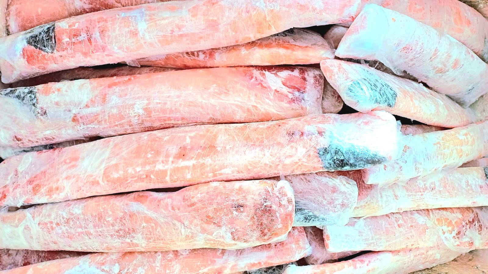

Filé de Pintado
Pseudoplatystoma corruscans
Escolha o Formato:
Resposta rápida pelo WhatsApp. Entregamos em Cáceres e região.
Filé de Pintado: O Corte Mais Nobre do Rio Paraguai
O Filé de Pintado é o corte mais valorizado e procurado do Pseudoplatystoma corruscans, obtido através de uma filetagem cuidadosa que preserva ao máximo a integridade da carne. Com coloração branca-rosada e textura firme, o filé não possui nenhuma espinha intermuscular, tornando-o ideal para todas as idades — especialmente crianças e idosos. A ausência de ossos facilita o preparo e eleva a experiência gastronômica, pois o comensal pode apreciar cada garfada sem interrupção. Na Peixaria Rio Paraguai, o filé é cortado fresquinho no momento do pedido, garantindo que você receba a máxima qualidade do peixe.
A versatilidade do Filé de Pintado em receitas é inigualável entre os peixes de rio do Centro-Oeste. Grelhado na frigideira com azeite, alho e ervas finas, o filé forma uma crosta dourada irresistível enquanto mantém o interior úmido e macio. Em tiras empanadas com farinha panko ou de mandioca, vira o petisco perfeito para churrascos e reuniões. Cortado em cubos, entra em moquecas e caldos de forma a absorver todos os aromas do refogado. Para pratos de chef, o filé de Pintado aceita molhos sofisticados — de alcaparras, maracujá ou manteiga com limão-siciliano — sem perder sua identidade de peixe nobre da culinária pantaneira.